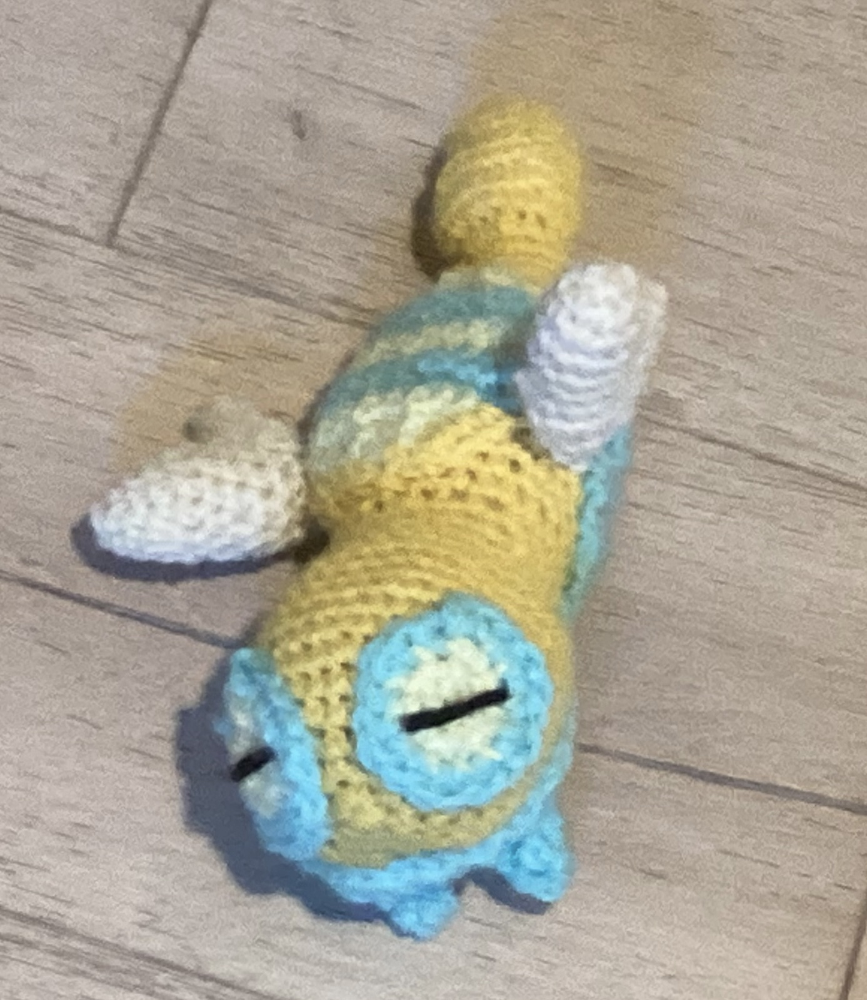
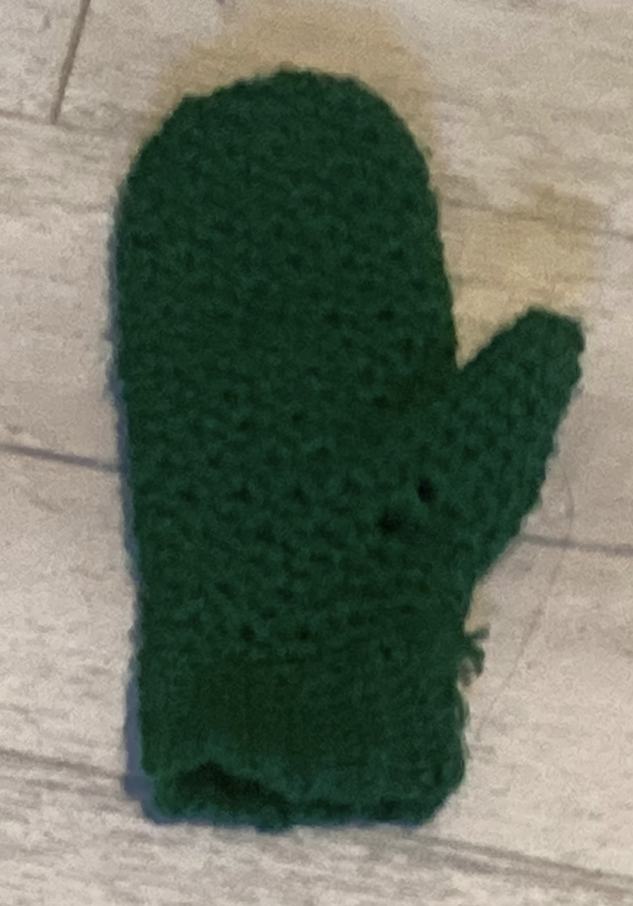
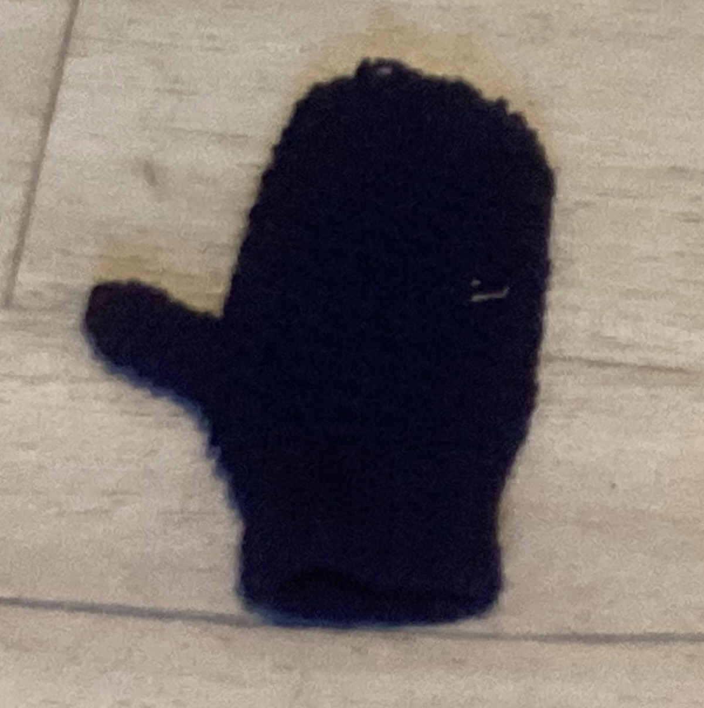
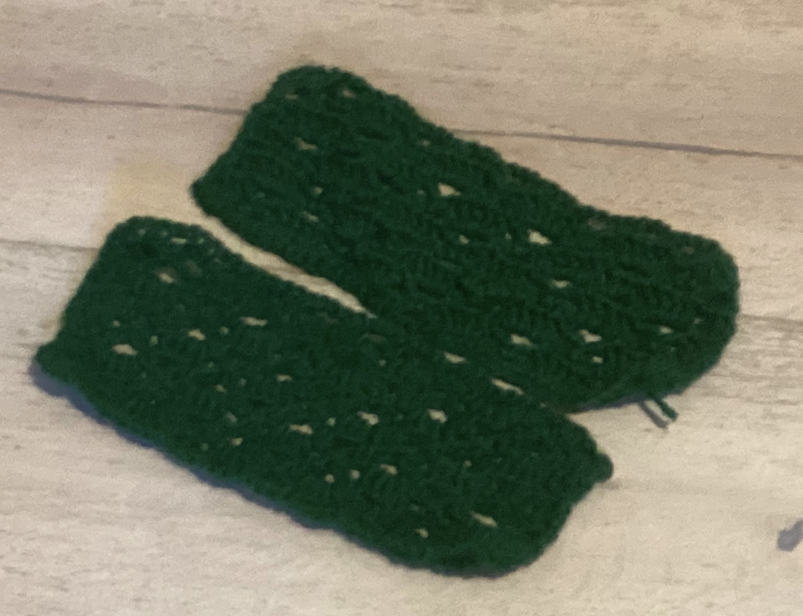
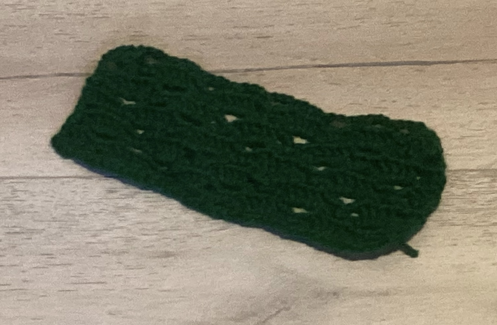
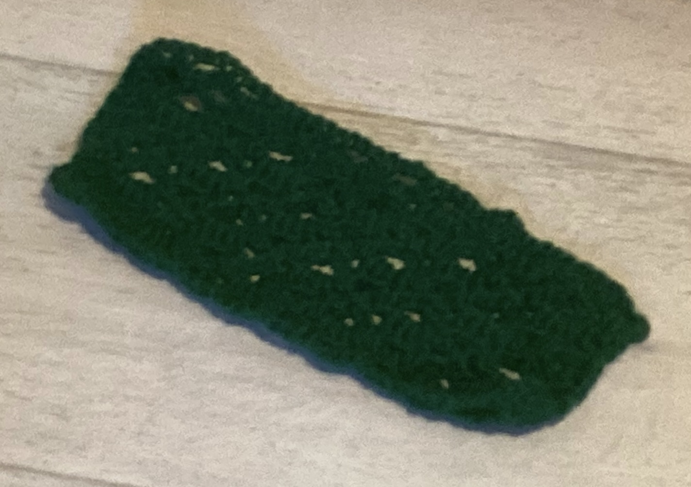

Things I've Made
I added the page for my in-progress One Pager.
I made the page you're looking at right now, the project photos page / things I've made page. I also finished Arthur's birthday gift, a Dunsparce plushie!

I programmed this site to keep track of everything and I added things I made previously. I also made a goofy bookmark thing in light yellow and light blue that I gifted to a friend's mom.
Finished a mitten sized for myself!

Finished a mitten sized for Arthur! It's dark blue and it's not perfect (I did sc instead of sl st in blo because it was too tight) but I'm proud of my creation.

Finished the right sleeve of my cardigan! It's identical to the left sleeve, so I've also attached a photo of them together.


Finished the left sleeve of my cardigan!
